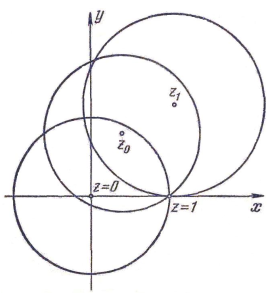
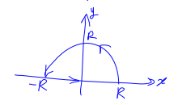
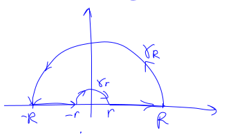
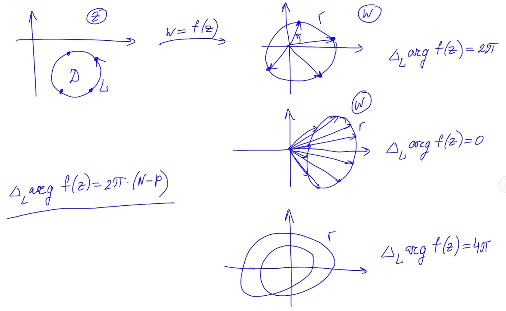
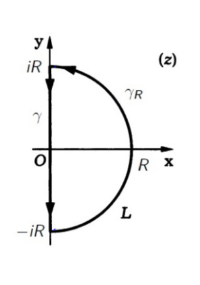
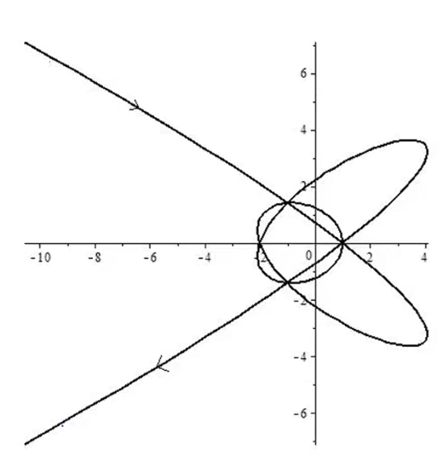

$\global\def\abs#1{\left\lvert #1 \right\rvert}$
$\global\def\dv#1#2{\frac{d #1}{d #2}}$
$\global\def\pdv#1#2{\frac{\partial #1}{\partial #2}}$
$\global\def\ppdv#1#2#3{\frac{\partial^2 #1}{\partial #2 \partial #3}}$
$\global\def\mbox#1{\text{#1}}$
$\global\def\rot{\text{rot}\,}$
$\global\def\const{\text{const}\,}$
$\global\def\res{\text{res}\,}$
$\global\def\Res{\text{Res}\,}$
$\global\def\Re{\text{Re}\,}$
$\global\def\Im{\text{Im}\,}$
$\global\def\ch{\text{ch}\,}$
$\global\def\sh{\text{sh}\,}$
$\global\def\argtg{\text{argtg}\,}$
-
Определение: аналитичность функции $f(z)$
Говорят, что $f(z)$
аналитична в некоторой области $A \subset
\mathbb{C}$ (
область аналитичности), если выполняется одно из
следующих равносильных условий:
-
Ряд Тейлора функции в каждой точке $z \in A$ сходится, и его сумма
равна $f(z)$ (аналитичность в смысле Вейерштрасса)
-
В каждой точке $z = x + i y \in A$ выполняются условия
Коши-Римана:
\[
\pdv{u}{x} = \pdv{v}{y}, \quad \pdv{u}{y} = -\pdv{v}{x},
\]
где $u(z), v(z)$ — вещественная и мнимая части
рассматриваемой функции $f(z)$
(аналитичность в смысле Коши-Римана)
-
Интеграл $\displaystyle \int\limits_\Gamma f(z) dz = 0$ для любой
замкнутой кривой $\Gamma \subset A$
(аналитичность в смысле Коши)
-
Функция $f(z)$ является голоморфной в области $A$, то есть
комплексно дифференцируема в каждой точке $z \in A$
-
Определение: целая функция
Говорят, что функция $f(z)$ — целая, если она голоморфна во всей
$\mathbb{C}$.
-
Интегральная формула Коши
Пусть функция $f(z)$ аналитична в замкнутой односвязной области
$\overline{D} \subset \mathbb{C}$ и $L$ — граница $D$. Тогда для
любой точки $z_0 \in D$ справедлива интегральная формула Коши:
\[
f(z_0) = \frac{1}{2\pi i} \oint\limits_L \frac{f(z)}{z - z_0} dz.
\]
-
Необходимый признак сходимости ряда
\[
\lim_{n\to\infty} a_n = 0.
\]
-
Признак Даламбера для абсолютно сходящихся рядов
Если существует
\[
\lim_{n\to\infty} \abs{\frac{a_{n+1}}{a_n}} = p,
\]
то при $p \lt 1$ ряд $\sum\limits_{k=1}^\infty \abs{a_k}$ сходится, а
при $p \gt 1$ — расходится.
-
Признак Коши для абсолютно сходящихся рядов
Если существует
\[
\lim_{n \to \infty} \sqrt[n]{\abs{a_n}} = q,
\]
то при $q \lt 1$ ряд $\sum\limits_{k=1}^\infty \abs{a_k}$ сходится, а
при $q \gt 1$ — расходится.
-
Определение: равномерная сходимость функционального ряда
Ряд
\[
\sum_{k=1}^\infty f_k(z),
\]
сходящийся в области $D$, называется равномерно сходящимся в
этой области, если $\forall \varepsilon \gt 0 \; \exists N =
N(\varepsilon) \gt 0: \quad \forall n \gt N \; \abs{R_n(z)} \lt
\varepsilon$
одновременно для всех $z \in D$.
-
Признак Вейерштрасса (достаточный признак равномерной сходимости)
Если в каждой точке $z \in D$ модули $\abs{f_k(z)}$ мажорированы
соответствующими элементами какого-нибудь сходящегося числового ряда
$\sum\limits_{k=1}^\infty a_k$, то функциональный ряд
$\sum\limits_{k=1}^\infty f_k(z)$ сходится равномерно в $D$.
\[
\begin{aligned}
\abs{R_n(z)} &= \abs{f_{n+1}(z) + f_{n+2}(z) + \dots} \\
&\leqslant \abs{f_{n+1}(z)} + \abs{f_{n+2}(z)} + \dots \\
&\leqslant a_{n+1} + a_{n+2} + \dots \\
&= R_n \lt \varepsilon
\end{aligned}
\]
при $n \gt N(\varepsilon)$, так как числовой ряд
$\sum\limits_{k=1}^\infty a_k$ сходится.
-
Свойства суммы функционального ряда
Рассматриваем функциональный ряд вида $\sum\limits_{k=1}^\infty
f_k(z).$
-
Сумма $S(z)$ функционального ряда, равномерно сходящегося в $D$,
непрерывна в области $D$, если $f_k(z)$ являются непрерывными в
$D$ функциями.
Возьмём произвольную точку $z \in D$. Рассмотрим приращение
\[
\begin{aligned}
S(z + \Delta z) - S(z) &= S_n(z + \Delta z) + R_n(z + \Delta z) -
S_n(z) - R_n(z) \\
&= S_n(z + \Delta z) - S_n(z) + R_n(z + \Delta z) - R_n(z).
\end{aligned}
\]
Возьмём произвольно малый $\varepsilon \gt 0$. В силу
равномерной сходимости ряда
\[
\abs{R_n(z)} \lt \frac{\varepsilon}{3}, \quad
\abs{R_n(z + \Delta z)} \lt \frac{\varepsilon}{3}.
\]
В силу непрерывности функций $f_k(z)$ частичная сумма $S_n$
также непрерывна, поэтому
\[
\abs{S_n(z + \Delta z) - S_n(z)} \lt \frac{\varepsilon}{3}.
\]
Возвращаясь к приращению, окончательно получаем
\[
\begin{aligned}
S(z + \Delta z) - S(z) &\leqslant
\abs{S_n(z + \Delta z) - S_n(z)} + \abs{R_n(z + \Delta z)}
+ \abs{R_n(z)} \\
&\lt \frac{\varepsilon}{3} + \frac{\varepsilon}{3} +
\frac{\varepsilon}{3} = \varepsilon,
\end{aligned}
\]
откуда, в силу произвольности $z \in D$, следует
непрерывность $S(z)$ в $D$.
-
Равномерно сходящийся в $D$ функциональный ряд, составленный из
непрерывных функций, можно интегрировать почленно вдоль любой
кривой $\gamma$, принадлежащей области $D$:
\[
\int\limits_\gamma S(z) dz = \sum_{k=1}^\infty
\int\limits_\gamma f_k(z) dz.
\]
По условию $f_k(z)$ непрерывны, а ряд сходится равномерно,
следовательно, $S(z)$ также непрерывна, поэтому $\exists
\int\limits_\gamma f_k(z) dz$.
Полагая
\[
G_n = \sum_{k=0}^n \int\limits_\gamma f_k(z) dz,
\]
рассмотрим разность
\[
\int\limits_\gamma S(z) dz - G_n =
\int\limits_\gamma \left( S(z) - S_n(z) \right) =
\int\limits_\gamma R_n(z) dz.
\]
Возьмём произвольный $\varepsilon \gt 0$; в силу равномерной
сходимости ряда
\[
\exists N(\varepsilon): \; \forall n \gt N(\varepsilon) \quad
\abs{R_n(z)} \leqslant \frac{\varepsilon}{2 l_\gamma},
\]
где $l_\gamma$ — длина дуги $\gamma$.
Оценим модуль разности
\[
\rho_n = \abs{\int\limits_\gamma S(z) dz - G_n} =
\abs{\int\limits_\gamma R_n(z) dz} \leqslant
\frac{\varepsilon}{2 l_\gamma} \cdot l_\gamma \lt \varepsilon,
\]
откуда следует, что
$\displaystyle \lim_{n \to \infty} \rho_n = 0$, что влечёт за
собой равенство
\[
\int\limits_\gamma S(z) dz = \lim_{n \to \infty} G_n = \lim_{n
\to \infty} \sum_{k=1}^n \int\limits_\gamma f_k(z) dz =
\sum_{k=1}^\infty \int\limits_\gamma f_k(z)dz.
\]
-
(Вейерштрасса).
Пусть $f_k(z)$ являются аналитическими в $D$ функциями, а ряд
сходится равномерно в любой области $\overline{D_1} \subset D$
к функции $S(z)$. Тогда $S(z)$ также аналитична в области $D$,
и её производные можно получить почленным дифференцированием
ряда:
\[
\frac{d^n S(z)}{dz^n} = \sum_{k=1}^\infty \frac{d^n f_k(z)}{dz^n}.
\]
Докажем первую часть теоремы.
Рассмотрим произвольную точку $z_0 \in D$. Введём обозначение:
\[
D_r = \{ z: \abs{z - z_0} \lt r \}, \quad \left(\abs{z - z_0}
\leqslant r \right) \subset D.
\]
$S(z)$ непрерывна в $D_r$ и интегрируема по любому контуру
$\gamma \subset D_r$, поэтому (в силу аналитичности $f_k(z)$)
\[
\oint\limits_\gamma S(z) dz = \sum_{k=1}^\infty
\oint\limits_\gamma f_k(z) dz = 0.
\]
Выходит, что интеграл $\displaystyle \int\limits_\gamma S(z)dz =
0$ по любому замкнутому контуру $\gamma \subset D_r$, $\implies$
функция $S(z)$ аналитична в $D_r$, откуда, в силу произвольности
$z_0$ и $r$, она аналитична в $D$.
Докажем вторую часть теоремы.
Функции $S(z), f_k(z)$ аналитичны в $D$, тогда $\forall z_0 \in
D$
\[
\begin{aligned}
S^{(m)}(z_0) &= \frac{m!}{2\pi i} \oint\limits_L
\frac{S(z)}{(z - z_0)^{m+1}} dz, \\
f_k^{(m)}(z_0) &= \frac{m!}{2\pi i} \oint\limits_L
\frac{f_k(z)}{(z - z_0)^{m+1}} dz,
\end{aligned}
\]
где $L = \{ z: \abs{z - z_0} = r \}$.
Из равномерной сходимости ряда следует, что
\[
\sum_{k=1}^\infty \frac{f_k(z)}{(z - z_0)^{m+1}} = \frac{S(z)}{(z
- z_0)^{m+1}},
\]
а также
\[
\sum_{k=1}^\infty \oint\limits_L \frac{f_k(z)}{(z - z_0)^{m+1}}
= \oint\limits_L \frac{S(z)}{(z - z_0)^{m+1}},
\]
откуда, в силу аналитичности функций $S(z), f_k(z)$,
\[
\frac{d^n S(z)}{dz^n} = \sum_{k=1}^\infty \frac{d^n
f_k(z)}{dz^n},
\]
для любого $z_0 \in D$.
-
Теорема Абеля
(Абеля).
Если степенной ряд $\sum\limits_{n=0}^\infty c_n (z - z_0)^n$ сходится
в точке $z_1 \neq z_0$, то он абсолютно сходится внутри круга $\abs{z
- z_0} \lt \abs{z_1 - z_0}$, причём во всяком круге $\abs{z - z_0}
\leqslant \rho \lt \abs{z_1 - z_0}$ ряд сходится равномерно.
Из сходимости ряда $\displaystyle \sum_{k=0}^\infty c_k (z - z_0)^k$
в точке $z = z_1$ следует, что также будет сходится числовой ряд
\[
\sum_{k=0}^\infty c_k (z_1 - z_0)^k,
\]
откуда следует, что
\[
\lim_{k \to \infty} c_k (z_1 - z_0)^k = 0,
\]
что означает, что последовательность ограничена, то есть
$\exists M$:
\[
\abs{c_k (z_1 - z_0)^k} \leqslant M.
\]
Отсюда получаем оценку на $c_k$:
\[
\abs{c_k} \leqslant \frac{M}{\abs{z_1 - z_0}^k}.
\]
Рассмотрим теперь произвольную точку $z: \abs{z - z_0} \lt \abs{z_1
- z_0}$. Положим $\abs{z - z_0} = q \cdot \abs{z_1 - z_0}$,
где $q \lt 1$; тогда
\[
\abs{c_k (z - z_0)^k} = \abs{c_k} \cdot \abs{z - z_0}^k \leqslant
\frac{M}{\abs{z_1 - z_0}^k} \cdot q^k \cdot \abs{z_1 - z_0}^k = M
q^k.
\]
Ряд $\displaystyle \sum_{k=0}^\infty Mq^k$ сходится при $q \lt 1$,
поэтому ряд $\displaystyle \sum_{k=0}^\infty \abs{c_k (z - z_0)^k}$
сходится абсолютно в $\abs{z - z_0} \lt \abs{z_1 - z_0}$,
а в круге $\abs{z - z_0} \leqslant \rho \lt \abs{z_1 - z_0}$, по
признаку Вейерштрасса, он сходится равномерно.
Если степенной ряд $\sum\limits_{n=0}^\infty c_n (z - z_0)^n$
расходится в некоторой точке $z_2 \neq z_0$, то он расходится в
$\abs{z - z_0} \gt \abs{z_2 - z_0}$.
-
Радиус сходимости и область сходимости степенного ряда
-
Радиус сходимости $R$ определяется с помощью признаков
Даламбера или Коши:
\[
R = \lim_{n \to \infty} \abs{\frac{c_n}{c_{n+1}}}
\quad \mbox{ или } \quad
R = \lim_{n \to \infty} \frac{1}{\sqrt[n]{\abs{c_n}}}.
\]
-
Областью сходимости степенного ряда называется внутренность
круга $\abs{z - z_0} \lt R$.
-
Ряд Тейлора
Степенной ряд вида
\[
f(z) = \sum_{n=0}^\infty c_n (z - z_0)^n, \quad
c_n = \frac{1}{n!} f^{(n)} (z_0).
\]
-
Теорема о разложении функции в ряд Тейлора
Функция $f(z)$, аналитическая внутри круга $\abs{z - z_0} \lt R$,
может быть представлена в этом круге сходящимся степенным рядом
\[
f(z) = \sum_{n=0}^\infty c_n (z - z_0)^n,
\]
причём этот ряд определён однозначно.
-
Пример построения аналитического продолжения с помощью степенных рядов
Пусть первоначально функция $f_1(z)$ задана своим степенным рядом:
\[
f_1(z) = \sum_{n=0}^\infty z_n.
\]
Этот ряд сходися внутри круга $\abs{z} \lt 1$ к аналитической функции
\[
f_1(z) = \frac{1}{1 - z}.
\]
Всюду вне круга $\abs{z} \lt 1$ ряд расходится; следовательно,
$f_1(z)$ вне круга не определена.
Выберем некоторую точку $z_0$ внутри круга $\abs{z} \lt 1$ и построим
разложение $f_1(z)$ в степенной ряд
$\displaystyle \sum_{n=0}^\infty c_n (z - z_0)^n$ с центром в этой
точке. Коэффициенты вычислим по формуле
\[
c_n = \frac{f^{(n)}(z_0)}{n!} = \frac{1}{(1 - z_0)^{n+1}}.
\]
Радиус сходимости этого ряда равен $\abs{1 - z_0}$, поэтому функция
\[
f_2(z) = \sum_{n=0}^\infty \frac{(z - z_0)^n}{(1 - z_0)^{n+1}}
\]
является аналитическим продолжением функции $f_1(z)$ на область
$\abs{z - z_0} \lt \abs{1 - z_0}$.
Заметим, что
\[
\begin{aligned}
f_2(z) &= \frac{1}{1 - z_0} \sum_{n=0}^\infty
\frac{(z - z_0)^n}{(1 - z_0)^n} \\
&= \frac{1}{1 - z_0} \cdot \frac{1}{1 -
\frac{z - z_0}{1 - z_0}} \\
&= \frac{1}{1 - z_0 - z + z_0} \\
&= \frac{1}{1 - z}.
\end{aligned}
\]
Далее, взяв в качестве нового центра разложения точку $z_1$ внутри
круга $\abs{z - z_0} \lt \abs{1 - z_0}$, получим ряд
\[
\sum_{n=0}^\infty \frac{(z - z_1)^n}{(1 - z_1)^{n+1}},
\]
сходящийся внутри круга $\abs{z - z_1} \lt \abs{1 - z_1}$ к функции
$f_3(z) = \dfrac{1}{1 - z}$, совпадающей с $f_2(z)$ и $f_1(z)$ в общих
частях круга $\abs{z - z_1} \lt \abs{1 - z_1}$ и областей определения
соответствующих функций. Таким образом, $f_3(z)$ является
аналитическим продолжением $f_1(z)$ на новую область.
При любом выборе точки $z_1$ граница соответствующего круга сходимости
пройдёт через точку $z = 1$.

Поступая аналогичным образом, можно построить аналитическое
продолжение функции $f_1(z)$ на всю $\mathbb{C}$, за исключением точки
$z = 1$. При этом аналитическим продолжением $f_1(z)$ является функция
\[
F(z) = \frac{1}{1 - z},
\]
определённая и аналитическая всюду, кроме точки $z = 1$.
-
Какова область сходимости ряда с отрицательными степенями
$\displaystyle \sum_{n=0}^\infty a_n (z - z_0)^{-n}$?
Областью сходимости этого ряда является внешность круга
\[
\abs{z - z_0} \gt r.
\]
\[
\lim_{n \to \infty} \abs{ \frac{a_{n+1}}{(z - z_0)^{n+1}} \cdot
\frac{(z - z_0)^n}{a_n} } =
\underbrace{\lim_{n \to \infty}
\frac{\abs{a_{n+1}}}{\abs{a_n}}}_{\displaystyle r}
\cdot \frac{1}{\abs{z - z_0}} \lt 1,
\]
\[
\implies \abs{z - z_0} \gt r.
\]
-
Ряд Лорана
Ряд вида
\[
\sum_{n=-\infty}^\infty a_n (z - z_0)^n =
\underbrace{\sum_{n=1}^\infty a_{-n} (z - z_0)^{-n}}_{\mbox{главная часть}} +
\underbrace{\sum_{n=0}^\infty a_n (z - z_0)^n}_{\mbox{правильная часть}}.
\]
-
Какова область сходимости ряда Лорана?
Круговое кольцо вида
\[
r \lt \abs{z - z_0} \lt R.
\]
-
Теорема Лорана
Всякая функция $f(z)$, однозначная и аналитическая в круговом кольце
$r \lt \abs{z - z_0} \lt R$, где $0 \leqslant r \lt R \leqslant
\infty$, может быть единственным образом разложена в ряд Лорана:
\[
f(z) = \sum_{n=-\infty}^\infty c_n (z - z_0)^n,
\]
где
\[
c_n = \frac{1}{2 \pi i} \oint\limits_{\gamma}
\frac{f(t)}{(t - z_0)^{n+1}} dt, \quad n \in \mathbb{Z},
\]
а $\gamma$ — любая окружность $\abs{t - z_0} = \rho$, $r \lt
\rho \lt R$, ориентированная против часовой стрелки.
-
Определение: нуль аналитической функции
$f(z) \not\equiv 0$.
Точка $z_0$ называется
корнем (
нулём) функции $f(z)$,
если $f(z_0) = 0$.
-
Определение: нуль порядка $m$
Точка $z_0$ называется нулём порядка $m$ для аналитической
функции $f(z)$, если её разложение в степенной ряд имеет вид
\[
f(z) = \sum_{k=m}^\infty c_k (z - z_0)^k, \quad c_m \neq 0, \;
m \geqslant 1.
\]
-
Необходимое и достаточное условие того, что $z_0$ — нуль порядка
$m$
Число $z_0$ является нулём порядка $m$ функции $f(z)$ тогда и только
тогда, когда $f(z)$ делится на $(z - z_0)^m$:
\[
f(z) = (z - z_0)^m \varphi(z), \quad \varphi(z_0) \neq 0.
\]
-
Определение: особые точки
Точки, в которых функция $f(z)$ не является аналитической, называются
особыми точками этой функции.
-
Определение: изолированная особая точка
Особая точка $z_0$ функции $f(z)$ является изолированной особой
точкой, если функция $f(z)$ аналитична в некотором кольце $0 \lt
\abs{z - z_0} \lt R$, то есть если в достаточно малой окрестности
особой точки $z_0$ нет других особых точек.
-
Определение: устранимая особая точка (УОС)
Изолированная особая точка $z_0$ функции $f(z)$ называется
устранимой, если существует конечный предел
\[
\lim_{z \to z_0} f(z) = A \neq \infty.
\]
-
Определение: полюс
Изолированная особая точка $z_0$ функции $f(z)$ называется
полюсом, если
\[
\lim_{z \to z_0} f(z) = \infty.
\]
-
Определение: существенно особая точка (СОТ)
Изолированная особая точка $z_0$ функции $f(z)$ называется
существенно особой, если $\lim\limits_{z \to z_0} f(z)$
не существует.
-
Определение УОТ через разложение в ряд Лорана
Изолированная особая точка $z_0$ фунции $f(z)$ устранима тогда и
только тогда, когда лорановское разложение функции $f(z)$ в некоторой
окрестности $z_0$ не содежит главной части, то есть является рядом
Тейлора:
\[
f(z) = \sum_{n=0}^\infty c_n (z - z_0)^n.
\]
-
Определение полюса через разложение в ряд Лорана
Изолированная особая точка $z_0$ функции $f(z)$ является полюсом тогда
и только тогда, когда главная часть лорановского разложения $f(z)$ в
окрестности $z_0$ содержит лишь конечное число членов:
\[
f(z) = \frac{c_{-m}}{(z - z_0)^m} + \frac{c_{-(m-1)}}{(z - z_0)^{m-1}} +
\dots + \frac{c_{-1}}{z - z_0} + \sum_{n=0}^\infty c_n (z - z_0)^n.
\]
Если $m \gt 0$, $c_{-m} \neq 0$, то $m$ называется порядком
полюса. Если $m = 1$, то полюс называется простым.
-
Три эквивалентных утверждения про полюс
-
Точка $z = z_0$ является полюсом порядка $m$ функции $f(z)$.
-
Точка $z = z_0$ является нулём функции $\dfrac{\varphi(z)}{f(z)}$
кратности $m$, где $\varphi(z)$ — аналитичная в окрестности
$z = z_0$ функция, причём $\varphi(z_0) \neq 0$.
-
$f(z) \sim \dfrac{A}{(z - z_0)^m}$ при $z \to z_0, \; A \neq 0$.
-
Определение: мероморфная функция
Функция, имеющая особыми точками только полюсы, называется
мероморфной.
-
Определение СОТ через разложение в ряд Лорана
Изолированная особая точка $z_0$ функции $f(z)$ является существенно
особой тогда и только тогда, когда главная часть лорановского
разложения функции $f(z)$ в окрестности $z_0$ содержит бесконечное
число членов:
\[
f(z) = \sum_{n=-\infty}^\infty c_n (z - z_0)^n.
\]
-
Теорема Сохоцкого
Если точка $z_0$ — СОТ функции $f(z)$, то для любого числа $A$
(конечного или бесконечного) существует такая последовательность $\{
z_n \}$ значений аргумента, стремящаяся к пределу $z_0$, для которой
последовательность $\{ f(z_n) \}$ соответствующих значений функции
$f(z)$ стремится к $A$.
-
Теорема Пикара
Аналитичная функция в окрестности СОТ принимает все значения, кроме,
может быть, одного.
-
Определение: бесконечно удалённая изолированная особая точка
Точка $z = \infty$ называется бесконечно удалённой изолированной
особой точкой, если все другие особые точки находятся на конечном
расстоянии от начала координат.
-
Определение: окрестность бесконечно удалённой точки
Внешность круга $\abs{z} \gt r$, где $r \geqslant 0$ — любое
наперёд заданное число.
-
Определение: бесконечно удалённая изолированная особая точка функции
$f(z)$
Бесконечно удалённая точка $z = \infty$ называется изолированной
особой точкой функции $f(z)$, если в некоторой окрестности этой точки
(то есть вне круга с центром в $z = 0$) функция $f(z)$ аналитична.
-
Определение: бесконечно удалённая УОТ
Точку $z = \infty$ будем называть устранимой особой точкой
функции $f(z)$, если её разложение в ряд Лорана имеет вид
\[
f(z) = \sum_{n=0}^\infty c_n z^{-n},
\]
или если существует предел
\[
\lim_{z \to \infty} f(z) = c_0, \quad c_0 \neq \infty,
\]
то есть когда функция ограничена в окрестности бесконечно удалённой
точки.
-
Определение: бесконечно удалённый полюс порядка $m$
Точка $z = \infty$ называется полюсом порядка $m$ функции
$f(z)$, если разложение в ряд Лорана в окрестности этой точки имеет
вид
\[
f(z) = \sum_{n=-m}^\infty c_n z^{-n}, \quad c_{-m} \neq 0,
\]
или если
\[
\lim_{z \to \infty} f(z) = \infty.
\]
-
Определение: бесконечно удалённая СОТ
Бесконечно удалённая точка называется существенно особой точкой
функции $f(z)$, если разложение в ряд Лорана для неё имеет вид
\[
f(z) = \sum_{n=-\infty}^\infty c_n z^n,
\]
причём главная часть состоит из бесконечного числа членов.
-
Первое определение вычета функции
Вычетом функции $f(z)$ относительно особой точки $z_0$
называется коэффициент $c_{-1}$ при $(z - z_0)^{-1}$ в разложении в
ряд Лорана этой функции в окрестности $z_0$.
$\Res f(z_0), \; \underset{z = z_0}{\Res} f(z), \; \underset{z =
z_0}{\res} f(z)$.
-
Второе определение вычета функции
Вычетом функции $f(z)$ в точке $z_0$ называется интеграл
\[
\Res f(z_0) = \frac{1}{2 \pi i} \oint\limits_{L} f(z) dz,
\]
где $L$ — произвольный контур в кольце $0 \lt \abs{z - z_0} \lt
R$, ориентированный против часовой стрелки ($L$ должен окружать точку
$z_0$).
-
Основная теорема о вычетах (теорема Коши)
Пусть функция $f(z)$ является аналитической всюду в замкнутой области
$\overline{D}$, за исключением конечного числа изолированных особых
точек $z_1, \dots, z_N$, лежащих внутри области $D$. Тогда
\[
\oint\limits_{L} f(z) dz = 2 \pi i \sum_{k=1}^N \Res f(z_k),
\]
где $L$ — полная граница области $D$, проходимая в положительном
направлении.
Функция $f(z)$ в области $D \setminus K_1 \cup K_2 \cup \dots \cup
K_N$ аналитична, следовательно, по теореме Коши,
\[
\oint\limits_L f(z) dz = \oint\limits_{l_1} f(z) dz + \dots +
\oint\limits_{l_N} f(z) dz.
\]
Для $\displaystyle \oint\limits_{l_k} f(z) dz$ разложим $f(z)$ в ряд
Лорана в окрестности точки $z_k$:
\[
\oint\limits_{l_k} f(z) dz = \dots + c_{-2} \oint\limits_{l_k}
\frac{dz}{(z - z_k)^2} + c_{-1} \oint\limits_{l_k}\frac{dz}{z - z_k}
+ c_0 \oint\limits_{l_k} dz + \dots
\]
Учитывая, что
\[
\oint\limits_{L^+} \frac{dz}{(z - a)^n} =
\begin{cases}
0, & n \neq 1, \\
2 \pi i, & n = 1,
\end{cases}
\]
получаем
\[
\oint\limits_{l_k} f(z) dz = c_{-1} \cdot 2 \pi i = 2 \pi i \cdot
\underset{z = z_k}{\Res} f(z).
\]
Таким образом,
\[
\oint\limits_L f(z) dz = \sum_{k=1}^N \oint\limits_{l_k} f(z) dz =
2\pi i \sum_{k=1}^N \underset{z = z_k}{\Res} f(z).
\]
-
Как вычислить вычет в конечной УОТ?
Вычет в конечной УОТ всегда равен нулю.
-
Как вычислить вычет в СОТ?
Если $z_0$ — СОТ, то имеется только один способ вычисления
вычета — разложение функции в ряд Лорана и определение
коэффициента $c_{-1}$.
-
Как вычислить вычет в полюсе?
Вычислить вычет в полюсе можно следующими способами:
-
Разложением в ряд Лорана.
-
Для простого полюса ($m = 1$) можно воспользоваться формулой:
\[
\Res f(z_0) = \lim_{z \to z_0} \left( f(z) (z - z_0) \right).
\]
-
Для полюса порядка $m$:
\[
\Res f(z_0) = \frac{1}{(m - 1)!} \lim_{z \to z_0}
\frac{d^{m-1}}{dz^{m-1}} \left( f(z) (z - z_0)^m \right).
\]
-
Для простого полюса в случае функции $f(z) =
\dfrac{g(z)}{\varphi(z)}$, где $g(z)$ и $\varphi(z)$ —
аналитические в окрестности $z_0$ функции, причём $g(z_0) \neq
0$, а для $\varphi(z)$ точка $z_0$ является нулём первого
порядка, можно воспользоваться формулой
\[
\Res f(z_0) = \frac{g(z_0)}{\varphi'(z_0)}.
\]
-
Разложение функции $f(z)$ в окрестности бесконечно удалённой точки
по степеням $z$
\[
f(z) = \sum_{k=-\infty}^\infty c_k z^k = F_1(z) + F_2(z)
= \sum_{k=1}^\infty c_k z^k + \sum_{k=0}^\infty \frac{c_{-k}}{z^k},
\]
где $F_1(z)$ — главная часть, а $F_2(z)$ —
правильная часть.
-
Определение: вычет в бесконечно удалённой точке
Вычетом функции $f(z)$ в бесконечно удалённой точке называется
\[
\Res f(\infty) = \frac{1}{2 \pi i} \oint\limits_{L^-} f(z) dz,
\]
где $L^-$ — произвольный замкнутый контур, ориентированный по
часовой стрелке, принадлежащий множеству $\abs{z} \gt r$ (где функция
$f(z)$ аналитична).
Кроме того, если $\displaystyle f(z) = \sum_{k=-\infty}^\infty c_k
z^k$ — ряд Лорана функции во внешней окружности $\abs{z} = r$,
то
\[
\Res f(\infty) = -c_{-1}.
\]
-
Чему равен интеграл $\displaystyle \oint\limits_{L^+} \frac{dz}{(z - a)^n}$?
\[
\oint\limits_{L^+} \frac{dz}{(z - a)^n} =
\begin{cases}
0, & n \neq 1 \\
2 \pi i, & n = 1.
\end{cases}
\]
-
Классификация бесконечно удалённой особой точки
-
Точка $z = \infty$ — УОТ, если $c_k = 0$ для всех $k \in
\mathbb{N}$, то есть если $\displaystyle f(z) = F_2(z) =
\sum_{k=0}^\infty \frac{c_{-k}}{z^k}$ для $\abs{z} \gt r$. В
этом случае
\[
\lim_{z \to \infty} f(z) = c_0.
\]
Очевидно,
\[
\frac{1}{2 \pi i} \oint\limits_{L^-} f(z) dz = -c_{-1},
\]
где $L^-$ — произвольный контур, ориентированный по часовой
стрелке, содержащий внутри себя окружность $\abs{z} = r$.
-
Точка $z = \infty$ — полюс порядка $m$, если
\[
f(z) = \sum_{k=1}^m c_k z^k + F_2(z), \quad c_m \neq 0.
\]
Тогда
\[
\lim_{z \to \infty} f(z) = \infty,
\]
\[
\begin{aligned}
\oint\limits_{L^-} f(z) dz &= \sum_{k=0}^\infty c_{-k}
\oint\limits_{L^-} \frac{dz}{z^k} + \sum_{k=1}^\infty
\oint\limits_{L^-} z^k dz \\
&= -c_{-1} \oint\limits_{L} \frac{dz}{z} = -2 \pi i c_{-1}.
\end{aligned}
\]
-
Точка $z = \infty$ — СОТ, если
\[
f(z) = \sum_{k=1}^\infty c_k z^k + F_2(z)
\]
и имеется бесконечное число чисел $c_k$, не равных нулю. В данном
случае функция из-за второго слагаемого не имеет предела при $z
\to \infty$.
\[
\oint\limits_{L^-} f(z) dz = \sum_{k=-\infty}^\infty c_k
\oint\limits_{L^-} z^k dz = -2 \pi i c_{-1}.
\]
-
Теорема о сумме вычетов
Пусть функция $f(z)$ аналитична на всей плоскости $z$ за исключением
конечного числа изолированных особых точек $z_1, \dots, z_N$. Тогда
сумма всех вычетов этой функции, включая вычет в бесконечно удалённой
точке, равна нулю:
\[
\sum_{k=1}^N \Res f(z_k) + \Res f(\infty) = 0.
\]
Число изолированных особых точек конечно, следовательно, существует
контур $L$, состоящий из $L^+, l_1, \dots, l_N$. $f(z)$ аналитична в
многосвязной области, следовательно, по теореме Коши для
многосвязной области
\[
\begin{aligned}
\oint\limits_{L^+} f(z) dz + \sum_{k=1}^N \oint\limits_{l_k^-} f(z)
dz &= 0 \quad \big| : -2\pi i \\
\underbrace{\frac{1}{2 \pi i} \oint\limits_{L^-} f(z) dz}_{-c_{-1}}
+
\underbrace{\frac{1}{2 \pi i} \sum_{k=1}^N \oint\limits_{l_k^+} f(z)
dz}_{c_{-1k}} &= 0, \implies \\
\implies \Res f(\infty) + \sum_{k=1}^N \Res f(z_k) &= 0.
\end{aligned}
\]
-
Следствие из теоремы о сумме вычетов
\[
\oint\limits_{L} f(z) dz = -2 \pi i \left( \Res f(-\infty) +
\sum_{k=m+1}^N \Res f(z_k) \right),
\]
где $z_1, \dots, z_m$ — особые точки, лежащие внутри контура
$L$.
По основной теореме о вычетах
\[
\oint\limits_{L} f(z) dz = 2 \pi i \sum_{k=1}^m \Res f(z_k),
\]
но по теореме о сумме вычетов
\[
\sum_{k=1}^N \Res f(z_k) + \Res f(\infty) =
\sum_{k=1}^m \Res f(z_k) + \sum_{k=m+1}^N \Res f(z_k)
+ \Res f(\infty) = 0,
\]
откуда следует, что
\[
\sum_{k=1}^m \Res f(z_k) = - \sum_{k=m+1}^N \Res f(z_k)
- \Res f(\infty),
\]
то есть
\[
\oint\limits_{L} f(z) dz = -2 \pi i \left( \Res f(-\infty) +
\sum_{k=m+1}^N \Res f(z_k) \right).
\]
-
Вычисление интеграла вида $\displaystyle \int\limits_0^{2\pi} R(\cos
x, \sin x) dx$ с помощью вычетов
Рассмотрим
\[
I = \int\limits_0^{2\pi} R(\cos x, \sin x) dx.
\]
Замена:
\[
\begin{gathered}
z = e^{ix}, \quad dz = i e^{ix} dx, \quad dx =
\dfrac{dz}{iz}, \\
x = \arg z, \quad x \in [0, 2\pi], \quad \abs{z} = \abs{e^{ix}} = 1.
\end{gathered}
\]
Тогда
\[
\begin{aligned}
\sin x &= \frac{e^{ix} - e^{-ix}}{2i} = \frac{z - \frac{1}{z}}{2i} =
\frac{z^2 - 1}{2iz}, \\
\cos x &= \frac{e^{ix} + e^{-ix}}{2} = \frac{z + \frac{1}{z}}{2} =
\frac{z^2 + 1}{2z}.
\end{aligned}
\]
В итоге получаем:
\[
I = \oint\limits_{\abs{z} = 1}
R(\frac{z^2 - 1}{2iz}, \frac{z^2 + 1}{2z}) \frac{dz}{iz}
= \oint\limits_{\abs{z} = 1} \widetilde{R}(z) dz
= 2 \pi i \sum_{k=1}^N \Res \widetilde{R}(z).
\]
-
Вычисление несобственного интеграла вида $\displaystyle
\int\limits_{-\infty}^\infty R(x) dx$ с помощью
вычетов
Рассмотрим
\[
\int\limits_{-\infty}^{+\infty} f(x) dx.
\]
Пусть $R(x)$ имеет аналитическое продолжение в $\mathbb{C}$ —
$f(z)$. Тогда построим контур $L = L_R \cup [-R; R]$, где $L_R = \{ z
: \abs{z} = R, \; \Im z \gt 0 \}$.

Тогда по основной теореме о вычетах
\[
\oint\limits_{L^+} f(z) dz = \int\limits_{-R}^{+R} f(x) dx +
\int\limits_{L_R} f(z) dz = 2 \pi i \sum_{k} \Res f(z_k).
\]
Устремляя $R \to \infty$, получим
\[
\int\limits_{-\infty}^{+\infty} f(x) dx + \lim_{R \to \infty}
\int\limits_{L_R} f(z) dz = 2 \pi i \sum_{k} \Res f(z_k);
\]
слева стоят вычеты во всех особых точках, для которых $\Im z_k \gt 0$.
Рассмотрим частный случай:
\[
I = \int\limits_{-\infty}^{+\infty} \frac{P_m(x)}{Q_n(x)}dx,
\]
где $f(x) = \dfrac{P_m(x)}{Q_n(x)}$ — правильная дробь.
Если знаменатель $Q_n(x)$ не имеет нулей на действительной оси,
а $n \geqslant m + 2$, тогда
\[
\int\limits_{-\infty}^\infty f(x) dx = 2 \pi i \sum_{k=1}^n \Res
R(z_k),
\]
где вычеты берутся во всех полюсах $z_k$ функции $R(z)$, расположенных
в верхней полуплоскости $\Im z \gt 0$.
-
Лемма Жордана
Пусть функция $f(z)$ аналитична в полуплоскости $\Im z \gt 0$ за
исключением конечного числа изолированных особых точек, и пусть $M(R)$
— максимум модуля $f(z)$ на полуокружности
\[
M(R) = \max\limits_{\gamma_R} \abs{f(z)}, \quad \gamma_R =
\left\{ z \in \mathbb{C}: \abs{z} = R, \; \Im z \gt 0 \right\}.
\]
Если $M(R) \to 0$ при $R \to \infty$, то для любого действительного
числа $\lambda \gt 0$
\[
\int\limits_{\gamma_R} f(z) e^{i \lambda z} dz \to 0 \quad \mbox{при}
\quad R \to \infty.
\]
Для случая $\lambda \lt 0$ в условиях леммы нужно заменить верхнюю
полуплоскость на нижнюю и соответственно верхнюю полуокружность на
нижнюю.
\[
\begin{aligned}
\abs{\int\limits_{\gamma_R} f(z) e^{i \lambda z} dz} &\leqslant M(R)
\cdot \int\limits_{\gamma_R} \abs{e^{i \lambda z}} dz =&& \left( z =
Re^{i\varphi} \right) \\
&= M(R) \int\limits_0^\pi \abs{e^{\displaystyle i \lambda
R(\cos\varphi + i \sin\varphi)} Rie^{i\varphi}} d\varphi \\
&= M(R) \cdot R \int\limits_0^\pi \underbrace{\abs{e^{\displaystyle
i (\lambda R\cos\varphi + \varphi)}}}_{=1}
\cdot \abs{ie^{\displaystyle -\lambda R \sin\varphi}} d\varphi \\
&= M(R) \cdot R \cdot 2 \int\limits_0^{\pi/2}
e^{\displaystyle -\lambda R \sin\varphi} d\varphi \leqslant&& \left(
\sin\varphi \geqslant \frac{2}{\pi}\varphi \; \mbox{при} \;
\varphi\in[0;\pi/2] \right) \\
&\leqslant M(R) \cdot R \cdot 2 \int\limits_0^{\pi/2}
e^{\displaystyle -\lambda R \frac{2}{\pi}\varphi} d\varphi \\
&= \frac{2R \cdot M(R) \pi}{2R \cdot (-\lambda)}
e^{\displaystyle -\lambda R \frac{2}{\pi}\varphi} \big|_0^{\pi/2} \\
&= -M(R) \cdot \frac{\pi}{\lambda} \left(e^{-\lambda R} - 1 \right)
\underset{R \to \infty}{\longrightarrow} 0.
\end{aligned}
\]
Осталось доказать, что $\sin\varphi \geqslant \frac{2}{\pi}\varphi$
при $\varphi\in[0;\pi/2]$. Рассмотрим
\[
\begin{aligned}
h(\varphi) &= \sin\varphi - \frac{2}{\pi} \varphi \\
h'(\varphi) &= \cos\varphi - \frac{2}{\pi},
\end{aligned}
\]
производная обращается в ноль на $[0;\pi/2]$ в точке $\varphi_1 =
\arccos \frac{2}{\pi}$. Так как $h(0) = 0, \; h(\frac{\pi}{2}) = 0$,
то $h(\varphi) \geqslant 0$ на $[0;\pi/2]$.
-
Вычисление несобственных интегралов вида
$\displaystyle \int\limits_{-\infty}^\infty R(x) \cos \lambda x dx$ и
$\displaystyle \int\limits_{-\infty}^\infty R(x) \sin \lambda x dx$
с помощью вычетов
Пусть $R(x) = \dfrac{P_m(x)}{Q_n(x)}$ — правильная рациональная
дробь, не имеющая особых точек на действительной оси, а $R(z)$ —
её аналитическое продолжение на $\Im z \gt 0$. Пусть также
\[
R(z) e^{i\lambda z}, \quad (\lambda \gt 0)
\]
имеет конечное число полюсов на $\Im z \gt 0$ и не имеет особых точек
на вещественной оси. Тогда все условия леммы Жордана выполнены, и
\[
\int\limits_{\gamma_R} R(z) e^{i \lambda z} dz
\underset{R\to\infty}{\longrightarrow} 0.
\]
Тогда по основной теореме о вычетах
\[
2\pi i \sum_{k=1}^N \underset{z=z_k}{\Res} \left( R(z)e^{i \lambda
z}\right) = \int\limits_{-\infty}^{+\infty} R(x) e^{i\lambda x} dx +
\int\limits_{\gamma_R} R(z) e^{i \lambda z} dz =
\int\limits_{-\infty}^{+\infty} R(x) e^{i\lambda x} dx.
\]
Так как
\[
e^{i\lambda x} = \cos \lambda x + i \sin \lambda x,
\]
то окончательно выражаем
\[
\begin{aligned}
\int\limits_{-\infty}^\infty R(x) \cos \lambda x dx &= \Re
\left( 2 \pi i \sum_{k} \Res \left(
R(z_k) e^{i \lambda z_k}
\right) \right), \\
\int\limits_{-\infty}^\infty R(x) \sin \lambda x dx &= \Im
\left( 2 \pi i \sum_{k} \Res \left(
R(z_k) e^{i \lambda z_k}
\right) \right).
\end{aligned}
\]
-
Интеграл Дирихле (случай, когда особая точка лежит на контуре)
Рассмотрим интеграл
\[
\int\limits_0^{+\infty} \frac{\sin x}{x} dx,
\]
имеем случай
\[
\int\limits_{-\infty}^\infty R(x) \sin \lambda x dx
\]
при $R(x) = \dfrac{1}{x}$, $\lambda = 1$. Тогда $f(z) = \dfrac{1}{z}
e^{iz}$; $z_1 = 0$ — простой полюс, лежащий на действительной
оси.
Рассмотрим контур $L = [-R; -r] \cup \gamma_r \cup [r; R] \cup
\gamma_R$:

Тогда
\[
\underbrace{\int\limits_{-R}^{-r} \frac{e^{ix}}{x}dx}_{\displaystyle J_1}
+
\underbrace{\int\limits_{\gamma_r} \frac{e^{iz}}{z}dx}_{\displaystyle J_2}
+
\underbrace{\int\limits_{R}^{r} \frac{e^{ix}}{x}dx}_{\displaystyle J_3}
+
\underbrace{\int\limits_{\gamma_R} \frac{e^{iz}}{z}dx}_{\displaystyle J_4}
= \oint\limits_{L} f(z) dz = 0.
\]
\[
J_1 = \int\limits_{-R}^{-r} \frac{e^{ix}}{x}dx =
\left(
\begin{array}{c}
x = -t \\
dx = -dt
\end{array}
\right)
= \int\limits_R^r \frac{e^{-it}}{-t}(-dt)
= -\int\limits_r^R \frac{e^{-it}}{t}dt.
\]
\[
J_1 + J_3 =
-\int\limits_r^R \frac{e^{-ix}}{x}dx
+
\int\limits_r^R \frac{e^{ix}}{x}dx
=
\int\limits_r^R \frac{2i \sin x}{x}dx
=
2i \int\limits_r^R \frac{\sin x}{x}dx;
\]
\[
R \to +\infty, \; r \to 0 \implies J_1 + J_3 \to
2i \int\limits_0^{+\infty} \frac{\sin x}{x}dx;
\]
По лемме Жордана
\[
J_4 \longrightarrow 0 \quad \mbox{при} \quad R \to +\infty.
\]
\[
\begin{aligned}
\lim_{r \to 0} J_2 &=
\lim_{r \to 0} \int\limits_{\gamma_r} \frac{e^{iz}}{z}dx
= \left( z = r \cdot e^{i \varphi} \right)
= \lim_{r \to 0} \int\limits_{\pi}^0 \frac{e^{ir(\cos\varphi +
i\sin\varphi)}}{re^{i\varphi}} \cdot rie^{i\varphi} d\varphi \\
&= -i \int\limits_0^\pi \lim_{r \to 0} e^{ir\cos\varphi} \cdot
e^{-r\sin\varphi} d\varphi = -i\int\limits_0^\pi d\varphi = -\pi i.
\end{aligned}
\]
Тогда окончательно имеем
\[
2i \int\limits_0^{+\infty} \frac{\sin x}{x} dx + 0 - \pi i = 0
\implies \int\limits_0^{+\infty} \frac{\sin x}{x} dx = \frac{\pi}{2}.
\]
-
Определение: логарифмическая производная
Логарифмической производной функции $f(z)$ называется
производная её логарифма:
\[
\left( \ln f(z) \right)' = \frac{f'(z)}{f(z)}.
\]
-
Чем $n$-кратный нуль функции $f(z)$ является для её логарифмической
производной?
Простым полюсом, причём вычет логарифмической производной в этой
точке равен кратности нуля, то есть $n$:
\[
(\ln f(z))' = \frac{n}{z - z_0} + b_1 + b_2(z - z_0) + \dots
\]
-
Чем $p$-кратный полюс функции $f(z)$ является для её логарифмической
производной?
Простым полюсом, причём вычет логарифмической производной в этой
точке равен порядку полюса, взятому с обратным знаком, то есть $-p$:
\[
(\ln f(z))' = -\frac{p}{z - z_1} + c_1 + c_2(z - z_1) + \dots
\]
-
Определение: логарифмический вычет функции $f(z)$ в точке $z = a$
Логарифмическим вычетом функции $f(z)$ в точке $z = a$
называется вычет её логарифмической производной в этой точке:
\[
\underset{z=a}{\Res} \frac{f'(z)}{f(z)} = \frac{1}{2 \pi i}
\oint\limits_{L} \frac{f'(z)}{f(z)}dz,
\]
где в качестве контура $L$ интегрирования можно взять любую окружность
с центром в точке $z = a$.
-
Определение: логарифмический вычет функции $f(z)$ относительно
контура $L$
Если $f(z)$ является аналитической функцией на замкнутом контуре $L$ и
не имеет нулей на нём, то значение
\[
\underset{L}{\Res} \frac{f'(z)}{f(z)} = \frac{1}{2 \pi i}
\oint\limits_{L} \frac{f'(z)}{f(z)} dz
\]
называют логарифмическим вычетом функции $f(z)$ относительно контура
$L$.
-
Теорема о логарифмическом вычете
Пусть непостоянная функция $f(z)$ аналитичная всюду в односвязной
области $D$ и на её границе — кусочно-гладком контуре $L$,
кроме, возможно, некоторого конечного числа полюсов. Пусть также
функция имеет конечное число нулей, причём на контуре $L$ нет ни
нулей, ни полюсов функции. Тогда
\[
\underset{L}{\Res} \frac{f'(z)}{f(z)} = N - P,
\]
где $N$ и $P$ — общее количество нулей и полюсов функции $f(z)$
в $D$, причём каждый нуль следует считать столько раз, какова его
кратность, а каждый полюс — каков его порядок.
\[
\begin{aligned}
\underset{L}{\Res} \frac{f'(z)}{f(z)} &\triangleq \frac{1}{2 \pi i}
\oint\limits_{L} \frac{f'(z)}{f(z)} dz =
\frac{1}{2 \pi i} \cdot 2 \pi i \left(
\overbrace{\sum_i \underset{a_i}{\Res}
\frac{f'(z)}{f(z)}}^{\mbox{вычеты в нулях}} +
\overbrace{\sum_j \underset{b_j}{\Res}
\frac{f'(z)}{f(z)}}^{\mbox{вычеты в полюсах}}
\right) \\
&= q_1 + q_2 + \dots + q_m - (p_1 + p_2 + \dots + p_k) = N - P.
\end{aligned}
\]
-
Следствие из теоремы о логарифмическом вычете
Логарифмический вычет многочлена $P_n(z)$ степени $n$ относительно
контура $L$, на котором нет нулей $P_n(z)$, равен числу нулей
многочлена (с учётом их кратности) внутри контура.
-
Принцип аргумента
Пусть непостоянная функция $f(z)$ аналитична всюду в односвязной
области $D$ и на её границе — кусочно-гладком контуре $L$,
кроме, возможно, некоторого конечного числа полюсов. Пусть также
функция имеет конечное число нулей, причём на контуре $L$ нет ни
нулей, ни полюсов функции. Тогда приращение аргумента функции $f(z)$
при обходе в положительном направлении контура $L$ равно произведению
$2 \pi$ на разность числа нулей и полюсов функции $f(z)$,
расположенных в области $D$, причём каждый нуль следует считать
столько раз, какова его кратность, а каждый полюс — каков его
порядок:
\[
\begin{gathered}
\Delta_L \arg f(z) = 2 \pi (N - P), \\
N = q_1 + \dots + q_m, \quad P = p_1 + \dots + p_k,
\end{gathered}
\]
где
-
$q_i$ — кратность нуля $a_i$, $i = 1, \dots, m$
-
$p_i$ — порядок полюса $b_j$, $j = 1, \dots, k$
\[
\begin{aligned}
\oint\limits_L \left( \ln f(z) \right)' dz = \oint\limits_L
\frac{f'(z)}{f(z)} dz &= 2 \pi i \left(
\sum_i \underset{a_i}{\Res} \frac{f'(z)}{f(z)} +
\sum_j \underset{b_j}{\Res} \frac{f'(z)}{f(z)}
\right) \\
&= 2 \pi i (N - P),
\end{aligned}
\]
но, с другой стороны,
\[
\left( \ln f(z) \right)' dz = d \left( \ln (f(z)) \right)
= d \left( \ln\abs{f(z)} \right) + i \cdot d \left(\arg f(z)
\right),
\]
поэтому
\[
\oint\limits_L \left( \ln f(z) \right)' dz =
\underbrace{\oint\limits_L d \left( \ln\abs{f(z)} \right)}_{\Delta_L
\ln \abs{f(z)} = 0} +
i \underbrace{\oint\limits_L d \left( \arg f(z) \right)}_{\Delta_L
\arg f(z)} = i \cdot \Delta_L \arg f(z).
\]
Итого: $\displaystyle \Delta_L \arg f(z) = 2 \pi (N - P)$.
-
Геометрический смысл принципа аргумента
\[
\Delta_L \arg f(z) = 2\pi (N - P).
\]
При положительном обходе точки $z$ по контуру $L$ (границе области
$D$) образ точки $w = f(z)$ точки $z$ обходит контур $\Gamma$ в
положительном направлении столько раз, сколько нулей у функции $f(z)$
(с учётом кратности), а в отрицательном направлении — сколько
полюсов (с учётом порядка).

-
Алгоритм нахождения нулей многочлена в заданной области с помощью
принципа аргумента на примере многочлена
\[
P(z) = z^6 + z^5 + 6z^4 + 5z^3 + 8z^2 + 4z +1
\]
Найти количество корней многочлена
\[
P(z) = z^6 + z^5 + 6z^4 + 5z^3 + 8z^2 + 4z +1
\]
в правой полуплоскости.
Построим контур $L$ в правой полуплоскости, состоящий из
полуокружности $\gamma_R$ и её диаметра $\gamma = [-iR; iR]$.

При этом считаем $R \gt 0$ достаточно большим, чтобы все корни
многочлена $P(z)$ из правой полуплоскости лежали внутри контура $L$.
Также отметим, что чисто мнимых корней у многочлена нет, так как
вещественная и мнимая части $P(z)$ не обращаются в нуль одновременно
при $z = it$.
Согласно принципу аргумента, многочлен $P(z)$ имеет $N =
\dfrac{1}{2\pi} \Delta_L \arg P(z)$ нулей в области, ограниченной
контуром $L$.
Вычислим приращение аргумента при $R \to \infty$ на полуокружности
$\gamma_R$ и на отрезке мнимой оси $\gamma$ отдельно.
На полуокружности $\gamma_R: \abs{z} = R, \Re z \gt 0$ удобно
представить многочлен в виде
\[
P(z) = z^6 \left( 1 + \frac{1}{z} + \frac{6}{z^2} + \frac{5}{z^3} +
\frac{8}{z^4} + \frac{4}{z^5} + \frac{1}{z^6} \right).
\]
Тогда
\[
\arg P(z) = \arg (z^6) + \arg \left( 1 + \frac{1}{z} + \frac{6}{z^2}
+ \frac{5}{z^3} + \frac{8}{z^4} + \frac{4}{z^5} + \frac{1}{z^6}
\right),
\]
откуда
\[
\Delta \arg(z^6) = \Delta (6 \arg z) = 6 \pi,
\]
а второе слагаемое при $R \to \infty$ стремится к $1$, то есть
приращение его аргумента стремится к нулю.
Итак, на полуокружности $\gamma_R$ приращение аргумента $P(z)$ при
$R \to \infty$
\[
\Delta_{\gamma_R} \arg P(z) = 6 \pi.
\]
Вычислим теперь приращение аргумента при $R \to \infty$ на отрезке
мнимой оси $\gamma$. Для этого зададим параметрическое комплексное
уравнение этого отрезка: $z = it, \; t \in [-R, R]$. Подставим $z =
it$ в $P(z)$:
\[
P = -t^6 + it^5 + 6t^4 - 5it^3 - 8t^2 + 4it + 1.
\]
Выделим вещественную и мнимую части:
\[
u(t) = -t^6 + 6t^4 - 8t^2 + 1, \quad v(t) = t^5 - 5t^3 + 4t.
\]
Эти уравнения задают кривую на плоскости $(uv)$, то есть на
плоскости $(\omega)$.
При $t \to \pm \infty$
\[
\lim_{t \to \pm \infty} \arg P(z) = \lim_{t \to \pm \infty}
\left( \argtg \frac{v(t)}{u(t)} + \pi \right) = \pi.
\]

Как видно из рисунка, радиус-вектор точки $\omega$ при изменении $t$
от $+\infty$ до $-\infty$ поворачивается на три полных круга вокруг
начала координат по часовой стрелке (то есть в отрицательном
направлении), поэтому приращение аргумента при движении $z$ вдоль
$\gamma$ равно $-6\pi$.
Суммируя полученные результаты, получаем
\[
\Delta_L \arg P(z) = \Delta_{\gamma_R} \arg P(z) + \Delta_\gamma
\arg P(z) = 6\pi - 6\pi = 0,
\]
поэтому
\[
N = \frac{1}{2\pi} \Delta_L \arg P(z) = 0.
\]
-
Теорема Руше
Пусть функции $f(z)$ и $\varphi(z)$ являются аналитическими в
замкнутой области $D$, причём на границе $L$ этой области имеет место
неравенство:
\[
\abs{f(z)} \gt \abs{\varphi(z)}, \quad z \in L.
\]
Тогда полное число нулей (с учётом их кратности) в $D$ функции $F(z) =
f(z) + \varphi(z)$ равно полному числу нулей (с учётом их кратности)
функции $f(z)$.
$f(z) + \varphi(z) \neq 0$ на $L$, так как $\abs{f(z) + \varphi(z)}
\geqslant \abs{f(z)} + \abs{\varphi(z)} \gt 0$ на $L$.
$f(z) \neq 0$ на $L$, так как $\abs{f(z)} \gt \abs{\varphi(z)}
\geqslant 0$ на $L$, поэтому можно записать
\[
f(z) + \varphi(z) = f(z) \left( 1 + \frac{\varphi(z)}{f(z)} \right),
\]
в этом случае аргумент $f(z) + \varphi(z)$ запишется в виде
\[
\arg \left( f(z) + \varphi(z) \right) = \arg f(z) + \arg \left( 1 +
\frac{\varphi(z)}{f(z)} \right), \quad z \in L,
\]
поэтому
\[
\Delta_L \arg \left( f(z) + \varphi(z) \right) =
\Delta_L \arg f(z) +
\Delta_L \arg \left( 1 + \frac{\varphi(z)}{f(z)} \right),
\quad z \in L,
\]
Рассмотрим движение радиус-вектора $w = 1 +
\dfrac{\varphi(z)}{f(z)}$. Из условия теоремы следует, что при $z
\in L$
\[
\abs{\frac{\varphi(z)}{f(z)}} \lt 1.
\]
В таком случае
\[
w = 1 + \frac{\varphi(z)}{f(z)} \implies \abs{w - 1} \lt 1,
\]
откуда видно, что радиус-вектор $w$ не делает ни одного оборота
вокруг начала координат, поэтому
\[
\Delta_L \arg \left( 1 + \frac{\varphi(z)}{f(z)} \right) = 0,
\]
откуда, согласно принципу аргумента,
\[
\Delta_L \arg \left( f(z) + \varphi(z) \right) =
\Delta_L \arg f(z) +
\Delta_L \arg \left( 1 + \frac{\varphi(z)}{f(z)} \right) =
\Delta_L \arg f(z) = 2\pi N.
\]
-
Основная теорема высшей алгебры. Доказательство с помощью теоремы Руше
Полином $n$-той степени имеет на комплексной плоскости ровно $n$ нулей
(с учётом их кратности)
Рассмотрим полином $n$-той степени
\[
P_n(z) = a_0 z^n + \dots + a_n, \quad n \geqslant 1.
\]
Представим его в виде
\[
P_n(z) = f(z) + \varphi(z),
\]
где
\[
f(z) = a_0 z^n, \quad \varphi(z) = a_1 z^{n-1} + \dots + a_n.
\]
Рассмотрим контур $\abs{z} = R$; тогда перепишем отношение этих
функций:
\[
\begin{aligned}
\abs{\frac{\varphi(z)}{f(z)}} &= \abs{\frac{a_1}{a_0} \cdot
\frac{1}{z} + \dots + \frac{a_n}{a_0} \cdot \frac{1}{z^n}} \\
& \leqslant \frac{1}{\abs{a_0}} \cdot \left(
\frac{\abs{a_1}}{\abs{z}} + \dots + \frac{\abs{a_n}}{\abs{z}^n}
\right) \\
&\leqslant \frac{1}{\abs{a_0}} \cdot \frac{\abs{a_1} + \dots +
\abs{a_n}}{\abs{z}} \\
&= \frac{\abs{a_1} + \dots + \abs{a_n}}{\abs{a_0} \cdot R},
\end{aligned}
\]
откуда следует, что если
\[
R_0 = \frac{\abs{a_1} + \dots + \abs{a_n}}{\abs{a_0}},
\]
то на контуре $\abs{z} = R_0$ выполнено неравенство
\[
\abs{\frac{\varphi(z)}{f(z)}} \leqslant 1.
\]
Всегда можно найти $R \gt R_0$ такой, что на $\abs{z} = R$
выполняется
\[
\abs{\varphi(z)} \lt \abs{f(z)},
\]
поэтому, по теореме Руше, число нулей функции $f(z) = a_0 z^n$ равно
числу нулей функции $f(z) = \varphi(z) = P_n(z)$.
Очевидно, $a_0 z^n$ имеет в начале координат нуль кратности $n$,
откуда следует, что общее число корней многочлена $P_n(z)$ также
равно $n$.
-
Определение: функция ограниченного роста
Рассмотрим функцию вещественного перменного $f(t)$, определённую на
всей вещественной оси $t \in \mathbb{R}$ и интегрируемую на любом
конечном промежутке. Пусть $f(t)$ удовлетворяет условиям:
-
$f(t) = 0$ при $t \lt 0$.
-
$\exists M \gt 0, s \geqslant 0: \quad \forall t \in \mathbb{R}
\quad \abs{f(t)} \leqslant Me^{st}$.
Функция $f(t)$, удовлетворяющая этим условиям, называется
функцией ограниченного роста, а число $s_0 = \inf s$ —
показателем роста $f(t)$.
-
Как можно обойти первое условие функции ограниченного роста?
Первое условие ($f(t) = 0$ при $t \lt 0$) можно обойти, введя
функцию Хевисайда:
\[
\eta(t) =
\begin{cases}
0, & t \lt 0, \\
1, & t \geqslant 0.
\end{cases}
\]
Тогда любую функцию $f(t)$ можно заменить на $f(t) \cdot \eta(t)$ и
считать первое условие выполненным.
-
Определение: изображение и оригинал по Лапласу
Функция комплексного переменного $p \in \mathbb{C}$
\[
F(p) = \int\limits_0^{+\infty} f(t) e^{-pt} dt, \quad p = s + i \sigma
\]
называется
изображением по Лапласу, если существует указанный
интеграл. Исходная функция $f(t)$ называется
оригиналом.
-
$F(p) \doteqdot f(t), \quad f(t) \doteqdot F(p)$,
-
$F(p) = \mathcal{L}\{f(t)\}, \quad f(t) =
\mathcal{L}^{-1}\{F(p)\}$.
-
Теорема о существовании изображения
Пусть функция $f(t)$ является функцией ограниченного роста с
показателем роста $s_0$. Тогда в правой полуплоскости $\Re p \gt s_0$
существует изображение $\displaystyle F(p) =
\int\limits_0^{+\infty} f(t) e^{-pt} dt$, причём $F(p)$ —
аналитическая функция.
Докажем существование.
По условию: $\abs{f(t)} \leqslant Me^{s_0 t}$. Пусть $p = s + i
\sigma$, тогда
\[
\abs{f(t) e^{-pt}} = \abs{f(t)} \cdot \abs{e^{-pt}} = \abs{f(t)}
\cdot e^{-\Re p \cdot t} = \abs{f(t)} e^{-st} \leqslant
Me^{s_0 t} \cdot e^{-st} = Me^{(s_0 - s) t}.
\]
\[
\abs{\int\limits_0^{+\infty} f(t) e^{-pt} dt} \leqslant
\int\limits_0^{+\infty} Me^{(s_0 - s) t} dt = \frac{M}{s_0 - s}
e^{(s_0 - s) t} \Big|_0^{+\infty} = \frac{M}{s - s_0}.
\]
По условию $\Re p \gt s_0$, поэтому доказано существование $F(p)$.
Докажем аналитичность $F(p)$.
\[
\begin{aligned}
\abs{\dv{}{p} \int\limits_0^{+\infty} f(t) e^{-pt} dt} &=
\abs{\int\limits_0^{+\infty} t f(t) e^{-pt} dt} \\
&\leqslant \int\limits_0^{+\infty} M \underbrace{t}_u
\underbrace{e^{(s_0 - s)t} dt}_{dv} \\
&= M \left.\left( t e^{(s_0 - s)t}
\cdot \frac{1}{s_0 - s} \right)\right|_0^{+\infty} - M
\int\limits_0^{+\infty} \frac{e^{(s_0 - s) t}}{s_0 - s} dt \\
&= -M \left.\frac{e^{(s_0 - s) t}}{(s_0 - s)^2} \right|_0^{+\infty}
\\
&= \frac{M}{(s - s_0)^2}.
\end{aligned}
\]
Итак, $\displaystyle \dv{}{p} F(p)$ существует во всех точках
полуплоскости $\Re p \gt s_0$. Аналитичность доказана.
-
Следствие из теоремы о существовании изображения
Если функция $f(t)$ — оригинал, то $\displaystyle
\lim_{\Re p \to \infty} F(p) = 0$.
Пользуясь оценкой интеграла из доказательства теоремы о
существовании изображения, получаем
\[
\abs{F(p)} \leqslant \frac{M}{s - s_0} \underset{s \to
+\infty}{\longrightarrow} 0.
\]
-
Формула Меллина
Функция $f(t)$ — оригинал, $F(p)$ — изображение,
существующее в области $\Re p \gt s_0$.
Имеет место формула обращения (формула Меллина):
\[
f(t) = \frac{1}{2 \pi i} \int\limits_{c-i\infty}^{c+i\infty}
F(p)e^{pt} dp, \quad c \gt s_0.
\]
-
Теорема о существовании оригинала
Пусть функция $F(p)$ комплексного переменного $p$
-
определена и аналитична в правой полуплоскости
$\Re p \gt s_0 \geqslant 0$,
-
равномерно по аргументу $p$ стремится к нулю при $\abs{p} \to
\infty$ в любой полуплоскости $\Re p \geqslant c \gt s_0$,
-
сходится интеграл
\[
M = \int\limits_{c-i\infty}^{c+i\infty} \abs{F(p)}\abs{dp}.
\]
Тогда существует функция $f(t)$ вещественной переменной $t$, для
которой $F(p)$ — изображение по Лапласу, причём справедлива
формула Меллина
\[
f(t) = \frac{1}{2 \pi i} \int\limits_{c-i\infty}^{c+i\infty} F(p)
e^{pt} dp,
\]
где интеграл вычисляется по прямой $\Re p = c$, параллельной мнимой
оси, и понимается в смысле главного значения.
-
Свойство линейности преобразования Лапласа
-
$\alpha,\beta \in \mathbb{C}$
-
$f(t) \doteqdot F(p)$
-
$g(t) \doteqdot G(p)$
\[
\alpha f(t) + \beta g(t) \doteqdot \alpha F(p) + \beta G(p).
\]
-
Теорема подобия
Пусть $a \in \mathbb{R}$, $a \gt 0$. Тогда
\[
f(at) \doteqdot \frac{1}{a} F(\frac{p}{a}).
\]
\[
f(at) \doteqdot \int\limits_0^{+\infty} f(at) \cdot e^{-pt} dt
= \int\limits_0^{+\infty} f(\tau) e^{-p\frac{\tau}{a}} \frac{d\tau}{a}
= \frac{1}{a} \int\limits_0^{+\infty} f(\tau) e^{-\frac{p}{a} \tau}
d\tau \triangleq \frac{1}{a} F(\frac{p}{a}).
\]
-
Теорема смещения
Пусть $\alpha \in \mathbb{C}$.
\[
e^{\alpha t} \cdot f(t) \doteqdot F(p - \alpha).
\]
\[
e^{\alpha t} \cdot f(t) \doteqdot
\int\limits_0^{+\infty} e^{\alpha t} f(t) \cdot e^{-pt} dt =
\int\limits_0^{+\infty} f(t) \cdot e^{-(p-\alpha)t} dt =
F(p - \alpha).
\]
-
Теорема запаздывания
Пусть $\tau \in \mathbb{R}, \; \tau \gt 0$.
\[
f(t - \tau) \doteqdot e^{-p\tau} F(p).
\]
Если $f(t)$ — оригинал, то $\forall c \gt 0$ $f(t - \tau)$
также будет оригиналом, причём $f(t - \tau) = 0$ при $t \lt \tau$.
Тогда
\[
f(t - \tau) \doteqdot \int\limits_0^{+\infty} f(t - \tau) e^{-pt} dt
= \int\limits_0^{+\infty} \underline{f(t - \tau) e^{-p(t - \tau)}}
e^{-p \tau} \underline{d(t - \tau)} = e^{-p\tau} \cdot F(p).
\]
-
Дифференцирование изображения
\[
\begin{aligned}
F'(p) &\doteqdot -tf(t), \\
F''(p) &\doteqdot t^2f(t), \\
&\dots \\
F^{(n)}(p) &\doteqdot (-1)^n t^n f(t).
\end{aligned}
\]
$f(t) \doteqdot F(p)$, причём $F(p)$ — аналитическая функция
при $\Re p \gt s_0$. Тогда
\[
\begin{aligned}
F(p) &= \int\limits_0^{+\infty} f(t) e^{-pt} dt, \\
F'(p) &= \int\limits_0^{+\infty} f(t) (-t) e^{-pt} dt &&\doteqdot
-f(t) \cdot t, \\
F''(p) &= \left( F'(p) \right)' = -t(-f(t) \cdot t) &&= t^2 f(t), \\
&\dots \\
F^{(n)}(p) &\doteqdot &&\doteqdot (-1)^n t^n f(t).
\end{aligned}
\]
-
Дифференцирование оригинала
Пусть у функции $f(t)$ существуют производные порядка $n$,
удовлетворяющие свойствам оригиналов; $f(t) \doteqdot F(p)$. Тогда
\[
\begin{aligned}
f'(t) &\doteqdot p F(p) - f(0), && f(0) = \lim_{t \to +0} f(t), \\
f''(t) &\doteqdot p^2 F(p) - pf(0) - f'(0), \\
&\dots \\
f^{(n)}(t) &\doteqdot f^n F(p) - p^{n-1}f(0) - \dots - f^{(n-1)}(0).
\end{aligned}
\]
\[
\begin{aligned}
f'(t) &\doteqdot \int\limits_0^{+\infty} \underbrace{f'(t)}_{dv}
\underbrace{e^{-pt}}_{u} dt = e^{-pt} f(t) \big|_0^{+\infty} -
\int\limits_0^{+\infty} f(t) (-p) e^{-pt} dt = -f(0) + p F(p) \\
f''(t) &= \left(f'(t)\right)' \doteqdot p\left(pF(p) - f(0)\right) -
f'(0) = p^2 F(p) - p f(0) - f'(0), \\
&\dots \\
f^{(n)}(t) &\doteqdot p^n F(p) - p^{n-1} f(0) - \dots -
f^{(n-1)}(0).
\end{aligned}
\]
-
Интегрирование оригинала
\[
\int\limits_0^t f(\tau) d\tau \doteqdot \frac{F(p)}{p}.
\]
Рассмотрим вспомогательную функцию
\[
g(t) = \int\limits_0^{t} f(\tau) d\tau;
\]
-
$g(0) = 0, g(t \lt 0) = 0$ — по свойству $f(t)$,
-
$\displaystyle \abs{g(t)} \leqslant \int\limits_0^t
\abs{f(\tau)}d\tau \leqslant M \int\limits_0^t e^{s_0 \tau}
d\tau = \frac{M}{s_0} \left( e^{s_0 t} - 1\right) \leqslant
\frac{M}{s_0} e^{s_0 t}$.
Итак, $g(t)$ по определению оригинал, тогда
\[
\begin{gathered}
f(t) \doteqdot F(p), \quad g(t) \doteqdot G(p), \implies \\
\implies f(t) = g'(t) \doteqdot p G(p) - g(0) = p G(p) = F(p),
\end{gathered}
\]
окончательно получаем:
\[
g(t) \doteqdot G(p) = \frac{F(p)}{p}.
\]
-
Интегрирование изображения
Если существует интеграл $\displaystyle \int\limits_p^\infty F(\tau)
d\tau$ и функция $\dfrac{f(t)}{t}$ — функция ограниченного
роста, то
\[
\int\limits_p^{+\infty} F(p) dp \doteqdot \frac{f(t)}{t}.
\]
\[
\int\limits_0^{+\infty} f(t) e^{-pt}dt = F(p).
\]
Проинтегрируем $p$ от точки $p_0 = \xi_0 + i \eta_0$ до $\infty$ по
отрезку горизонтальной прямой $p = \sigma + i \eta$:
\[
\begin{aligned}
\int\limits_{p_0}^\infty dp \int\limits_0^{+\infty} f(t) e^{-pt} dt
&= \int\limits_{\xi_0}^\infty d\sigma \int\limits_0^{+\infty} f(t)
e^{-(\sigma + i \eta) t} dt \\
&= \int\limits_0^{+\infty} dt \int\limits_{\xi_0}^\infty f(t)
e^{-(\sigma + i \eta) t} d\sigma \\
&= \int\limits_0^{+\infty} f(t) e^{i \eta t} dt
\int\limits_{\xi_0}^{+\infty} e^{-\sigma t} d\sigma \\
&= \int\limits_0^{+\infty} \frac{f(t)}{t} e^{-(\xi + i \eta)t} dt =
\int\limits_{p_0}^\infty F(p) dp.
\end{aligned}
\]
Таким образом,
\[
\int\limits_p^{+\infty} F(p) dp \doteqdot \frac{f(t)}{t}.
\]
-
Определение: свёртка
Интеграл
\[
\int\limits_0^t f(t) g(t - \tau) d\tau =: (f*g) (t)
\]
называют
свёрткой функций $f(t)$ и $g(t)$.
Свёртка коммутативна:
\[
(f*g)(t) = (g*f)(t) =
\int\limits_0^t f(t) g(t - \tau) d\tau =
\int\limits_0^t g(t) f(t - \tau) d\tau.
\]
-
Теорема умножения (теорема о свёртке)
Если $F(p)$ и $G(p)$ — изображения по Лапласу функций $f(t)$ и
$g(t)$, то их произведение также является изображением, причём
\[
F(p) \cdot G(p) \doteqdot (f*g) (t).
\]
-
Следствие из теоремы умножения (интеграл Дюамеля)
\[
\begin{aligned}
pF(p)G(p) &\doteqdot f(+0)g(t) + \int\limits_0^t f'(\tau) g(t - \tau)
d\tau, \\
&\doteqdot g(+0)f(t) + \int\limits_0^t f(\tau) g'(t - \tau)
d\tau.
\end{aligned}
\]
-
Теорема умножения оригиналов
Пусть функции $f(t)$ и $g(t)$ удовлетворяют следующим условиям:
-
условиям теоремы о существовании изображения.
-
показатели роста функций $f(t)$ и $g(t)$ равны соответственно
$s_1$ и $s_2$.
-
$f(t) \doteqdot F(p), \; g(t) \doteqdot G(p)$.
-
произведение $f(t) \cdot g(t)$ также является оригиналом.
Тогда
\[
f(t) \cdot g(t) \doteqdot \frac{1}{2 \pi i}
\int\limits_{c-i\infty}^{c+i\infty} F(q) G(p-q) dq,
\]
где
-
$c \geqslant s_1$,
-
$\Re p \gt s_2 + c$,
-
$p \in \mathbb{C}, \; q \in \mathbb{C}$.
-
Первая теорема разложения
Если $F(p)$ — аналитическая в окрестности $p = \infty$
функция, $F(\infty) = 0$, разложение в ряд Лорана в окрестности $p =
\infty$ имеет вид
\[
F(p) = \sum_{k=1}^\infty \frac{a_k}{p^k}.
\]
Тогда оригиналом для $F(p)$ служит функция
\[
f(t) = \sum_{k=1}^\infty \frac{a_k}{(k - 1)!} t^{k-1},
\]
причём ряд сходится при любом $t \in \mathbb{R}$, а $f(t)$ —
целая функция.
-
Вторая теорема разложения
Пусть $F(p)$ удовлетворяет условиям:
-
$F(p)$ мероморфна в некоторой правой полуплоскости $\Re p \gt
s_0$, причём $p_1, p_2, \dots$ — особые точки, лежащие в
$\Re p \gt s_0$.
-
Существует такая последовательность радиусов $\{ R_n \}$,
$\displaystyle \lim_{n \to \infty} R_n = \infty$, что
$\displaystyle \lim_{n \to \infty} \max \{ \abs{F(p)}, \abs{p} =
R_n \} = 0$.
-
$F(p)$ абсолютно интегрируема вдоль любой вертикальной прямой
$\Re p = s, \; s \gt s_0$.
Тогда
\[
F(p) \doteqdot f(t) = \sum_k \underset{p=p_k}{\Res} F(p) e^{pt}.
\]
Пусть $F(p)$ — дробно-рациональная функция, а $p_1, p_2,
\dots$ — её полюсы (простые или кратные). Тогда
\[
F(p) \doteqdot f(t) = \sum_k \underset{p=p_k}{\Res} F(p) e^{pt}.
\]
-
Алгоритм решения задачи Коши для линейных дифференциальных уравнений с
постоянными коэффициентами при помощи преобразования Лапласа
Пусть поставлена задача Коши:
\[
\begin{gathered}
x^{(n)}(t) + a_1 x^{(n-1)}(t) + \dots + a_n x(t) = f(t), \\
x(0) = x_0, \; \dots, \; x^{(n-1)}(0) = x_0^{(n-1)}.
\end{gathered}
\]
Тогда
\[
\begin{aligned}
x(t) &\doteqdot X(p), \\
x'(t) &\doteqdot p X(p) - x(0), \\
&\dots \\
x^{(n)}(t) &\doteqdot p^n X(p) - p^{n-1} x(0) - \dots - x^{(n-1)}(0),
\\
f(t) &\doteqdot F(p).
\end{aligned}
\]
Получаем операторное уравнение, из которого найдём $X(p)$, после чего
перейдём к оригиналу $x(t)$: $X(p) \doteqdot x(t)$.
-
Алгоритм решения задачи Коши с помощью интеграла Дюамеля
-
Уравнение:
$x^{(n)}(t) + a_1 x^{(n-1)}(t) + \dots + a_n x(t) = f(t)$.
-
Начальные условия:
$x(0) = x'(0) = \dots = x^{(n-1)}(0) = 0$.
-
Неизвестная функция $x(t)$ имеет отображение $X(p)$.
-
Сложная функция в правой части $f(t)$ имеет изображение $F(p)$.
-
Решим вспомогательное уравнение
\[
y^{(n)}(t) + a_1 y^{(n-1)} + \dots + a_n y(t) = 1.
\]
С учётом начальных условий левая и правая часть будут иметь
следующие изображения:
\[
\begin{aligned}
y(t) &\doteqdot Y(p), \\
y'(t) &\doteqdot p Y(p), \\
&\dots \\
y^{(n)}(t) &\doteqdot p^n Y(p), \\
1 &\doteqdot \frac{1}{p}.
\end{aligned}
\]
Тогда вспомогательное операторное уравнение запишется в виде
\[
Y(p) \cdot h(p) = \frac{1}{p}, \quad
h(p) = p^n + a_1 p^{n-1} + \dots + a_n,
\]
откуда найдём $Y(p) \doteqdot y(t)$.
-
Решаем исходное уравнение. Левая часть совпадает со
вспомогательным уравнением, поэтому операторное уравнение
запишется как
\[
X(p) \cdot h(p) = F(p),
\]
но
\[
h(p) = \dfrac{1}{pY(p)},
\]
поэтому
\[
X(p) = pF(p)Y(p).
\]
Для нахождения $x(t)$ необходимо найти оригинал для $pF(p)Y(p)$,
то есть вычислить интеграл Дюамеля:
\[
pF(p)Y(p) \doteqdot y(0) \cdot f(t) + \int\limits_0^t f(\tau)
y'(t - \tau) d\tau.
\]
-
Решение задачи Коши с периодической правой частью с помощью
преобразования Лапласа
Пусть $f(t)$ — периодическая (с периодом $T$) функция-оригинал.
Введём обозначение:
\[
f_0(t) =
\begin{cases}
f(t), & 0 \lt t \lt T, \\
0, & t \geqslant T.
\end{cases}
\]
Тогда найти изображение для периодического оригинала можно двумя
способами:
-
Если записать $f(t)$ в виде
\[
f(t) = f_0(t) + f(t - T),
\]
то
\[
F(p) = F_0(p) + F(p) e^{-pT}, \implies
F(p) = \frac{F_0(p)}{1 - e^{-pT}}.
\]
-
\[
F(p) = \frac{1}{1 - e^{-pT}} \int\limits_0^T e^{-pt}f(t) dt.
\]
-
Решение дифференциальных уравнений с запаздывающим аргументом с
помощью преобразования Лапласа
\[
x'(t) = x(t - 1) + 1, \quad x(0) = 0.
\]
Решение:
\[
\begin{aligned}
pX(p) &= X(p) e^{-1 \cdot p} + \frac{1}{p}, \implies \\
\implies X(p) &= \frac{1}{p} \cdot \frac{1}{p - e^{-p}} \\
&= \frac{1}{p^2\left(1 - \dfrac{e^{-p}}{p}\right)}
= \frac{1}{p^2} \left( 1 + \frac{e^{-p}}{p} + \frac{e^{-2p}}{p^2} +
\dots \right) \\
&\doteqdot x(t) = t \cdot \eta(t) + \frac{(t - 1)^2}{2!} \eta(t - 1) +
\frac{(t - 2)^3}{3!} \eta(t - 2) + \dots
\end{aligned}
\]
-
Определение: интегральное уравнение
Интегральное уравнение — уравнение, содержащее искомую
функцию под знаком интеграла.
-
Уравнение Фредгольма первого рода
\[
\int\limits_a^b K(x, t) y(t) dt = f(x),
\]
где $y(x)$ — искомая функция.
-
Уравнение Фредгольма второго рода
\[
y(x) = f(x) + \int\limits_a^b K(x, t) y(t) dt,
\]
где $y(x)$ — искомая функция.
-
Уравнение Вольтерра первого рода
\[
\int\limits_a^x K(x, t) y(t) dt = f(x),
\]
где $y(x)$ — искомая функция.
-
Уравнение Вольтерра второго рода
\[
y(x) = f(x) + \int\limits_a^x K(x, t) y(t) dt,
\]
где $y(x)$ — искомая функция.
-
Чему равно изображение оригинала $\eta(t)$?
$\displaystyle \eta(t) \doteqdot \frac{1}{p}.$
-
Чему равно изображение оригинала $\eta(t - \tau)$? ($\tau \in
\mathbb{R}, \; \tau \gt 0$)
По теореме запаздывания
$\displaystyle \eta(t - \tau) \doteqdot \frac{1}{p} \cdot e^{-p
\tau}.$
-
Чему равно изображение оригинала $e^t$?
$\displaystyle e^t \doteqdot \frac{1}{p-1}.$
-
Чему равно изображение оригинала $e^{at}$? ($a \in \mathbb{C}$)
$\displaystyle e^{at} \doteqdot \frac{1}{p-a}.$
-
Чему равно изображение оригинала $\cos \omega t$? ($\omega \in
\mathbb{C}$)
$\displaystyle \cos \omega t \doteqdot \frac{p}{p^2 + \omega^2}.$
-
Чему равно изображение оригинала $\sin \omega t$? ($\omega \in
\mathbb{C}$)
$\displaystyle \sin \omega t \doteqdot
\frac{\omega}{p^2+\omega^2}.$
-
Чему равно изображение оригинала $\ch \omega t$? ($\omega \in
\mathbb{C}$)
$\displaystyle \ch \omega t \doteqdot
\frac{p}{p^2-\omega^2}.$
-
Чему равно изображение оригинала $\sh \omega t$? ($\omega \in
\mathbb{C}$)
$\displaystyle \sh \omega t \doteqdot
\frac{\omega}{p^2-\omega^2}.$